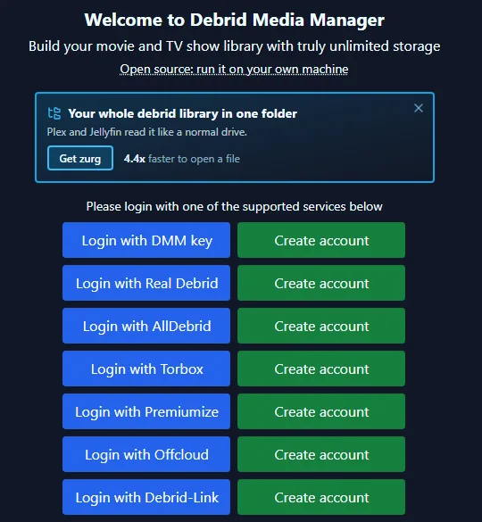
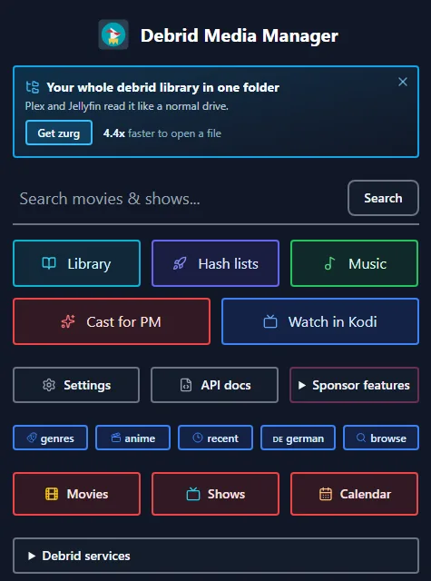
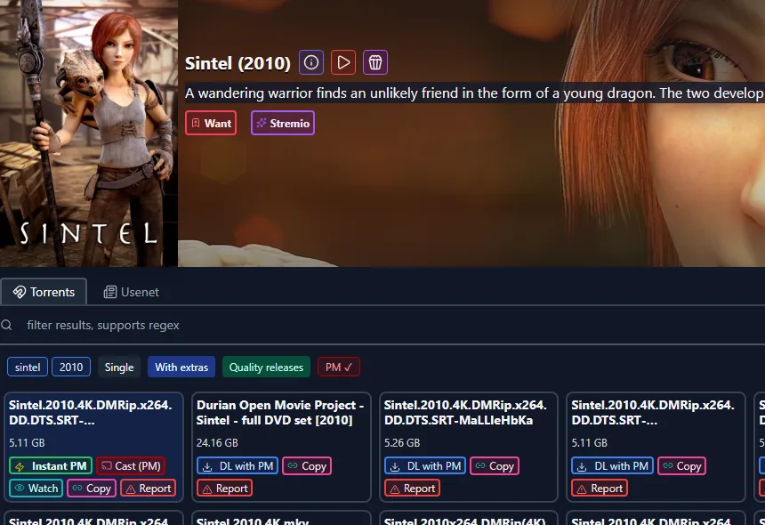

DMM 是什么，我该怎么用？
Debrid Media Manager（DMM）是一个免费网站，用来查找电影和剧集，并把它们添加到你的 debrid 账户中：Real-Debrid、AllDebrid、TorBox、Premiumize、Offcloud 或 Debrid-Link。你用该账户登录，搜索片名，然后在某个资源上点击 Instant RD（或你所用服务对应的按钮）。它会立即出现在你的库中，可以直接在 DMM 里观看，也可以在 Stremio 或 Kodi 中观看，或者通过 zurg 在 Plex 中观看。
DMM 是开源项目，不隶属于 Real-Debrid 或其他任何服务。文件仍然保存在你的 debrid 服务中。
登录
- 打开 debridmediamanager.com 并按下你使用的服务：Login with Real Debrid、Login with AllDebrid、Login with Torbox、Login with Premiumize、Login with Offcloud 或 Login with Debrid-Link。
- 在 Real-Debrid 上，按下 Sign in with Real-Debrid。DMM 会显示一个代码：按下 Open real-debrid.com/device，在那里输入代码并批准。DMM 页面会自行完成。你也可以把你的 API token 粘贴到 or paste an API key 下面，然后按下 Save API Key。
- 其他服务：按照它们的登录页面操作。如果页面要求 API key，就从你在该服务上的账户里复制，粘贴进去，然后按下 Save API Key。

还有其他服务吗？打开 DMM 首页上的 Debrid services，按下对应的 Login 按钮，例如 AllDebrid Login。
只有 Easynews？按下 Login with Easynews。你可以搜索 Easynews 并投送到 Stremio，但媒体库需要一个 debrid 账户。赞助者也可以使用 Login with DMM key 登录。
搜索电影或剧集
- 在首页的 Search movies & shows... 中输入片名。从建议列表中选一个，或按 Search 查看完整列表。
- 点击海报。片名页面会列出 DMM 找到的资源版本。
- 按结果上方你的服务标签（RD、PM 等）即可只显示该服务已有的资源版本。

发布版本上各个按钮的含义

Torrents 旁边的 Usenet 标签页会列出同一个标题的 Usenet 资源。NZB 可以下载其中一个。要把它们发送到你的库，需要 Real-Debrid 或 TorBox。有 Easynews 的话，在 Settings 里添加后，这里也会搜索它。
你的库
在首页点击 Library。这里列出你登录过的所有账号中的内容，包括名称、大小、状态和添加时间。

- 用 search by filename/hash/id, supports regex 搜索，或者用 Movies、TV shows 和 Others 缩小范围。
- 点击某一行可查看详情，以及它的 Hashlist、Delete、Cast 和 Copy 按钮。每行末尾的图标也有同样的功能。
- Backup 会把你的列表保存为
.dmm.json文件。RD Restore（PM Restore 等）可以把保存的列表重新添加回来。 - Share List 会把当前显示的内容或你选中的内容转换成哈希列表，其他人可以把它添加到自己的账号中。
- Delete List 会删除当前显示的所有内容，但需要先通过 Yes, delete! 确认。删除前请先搜索或选中要删的内容。
接下来去哪里
- DMM in Stremio：用 DMM Cast 插件在 Stremio 里观看你找到的内容。
- Hash 列表：把整个共享库加到你的库里，或者分享你自己的库。
- DMM 中的 TorBox：TorBox 的各个套餐在 DMM 中分别能做什么，以及如何把 Usenet 资源发送到 TorBox Pro。
- "Torrent is being downloaded to debrid"：Stremio 里那个画面是什么意思，以及 DMM 如何显示哪些内容已缓存。
- Safari 中的 DMM 按钮：浏览器扩展会在 IMDb、Trakt 以及其他电影和电视网站上添加一个 DMM 按钮。
DMM 也为其他项目提供服务：
- zurg 会向 DMM 询问每个文件对应的是哪部电影或哪一集。赞助者可以从 gatekeeper 获取 DMM API key。没有它的话，zurg 只能依赖文件名，匹配到的标题会更少。rex with zurg 解释了两者的区别。
- Sonarr Radarr 和 Prowlarr 可以把 DMM 当作 Torznab 种子索引器或 Newznab Usenet 索引器来搜索。两者都需要有效的赞助和 DMM API key。在 Torznab 和 Newznab 页面上进行设置。
- 你的想看列表：点击 Want，或者关注一个 Trakt 或 MDBList 列表。zurg 会抓取其中的内容，以及新播出的剧集。需要赞助。参见 DMM 想看列表。
- Seerr Overseerr 和 Jellyseerr 可以把 DMM 当作 Radarr 和 Sonarr 来使用。之后的请求会进入你的想看列表，由 zurg 去抓取。需要赞助。参见 通过 DMM 使用 Seerr。
- rex-direct 会为已认领的 rex 提供自己的地址和证书。参见 rex-direct。
赞助能解锁的所有功能，以及每项功能的设置位置，都在赞助者权益中。
出现问题时
遇到问题？请到 Discord 上的 dmm-support 论坛提问。Getting help 里说明了需要提供哪些信息。
常见问题
DMM 到底是什么？
一个用于搜索你的 debrid 账号的网站。它会查找电影或剧集的资源，告诉你哪些资源你的服务已经有了，并把你选中的那个添加到你的账号里。DMM 本身不存储任何文件。
我该怎么用？
使用你的 debrid 服务登录，搜索一个标题，打开它，然后在某个资源上按下 Instant RD（或你所用服务对应的 Instant 按钮）。接着按下 Watch，把它投射到 Stremio，或者让 zurg 把它放进 Plex。
DMM 是 Real-Debrid 做的吗？
不对。DMM 是一个开源项目，支持 Real-Debrid 和另外五个服务。很多人会搜索 "Real-Debrid Media Manager" 来找到它。
是免费的吗？
是的。你需要自己的 debrid 账户，这是一项付费服务。赞助 DMM 之后可以解锁一些额外功能，比如 wanted list 和 indexers：参见 What a sponsorship gives you。
支持哪些服务？
Real-Debrid、AllDebrid、TorBox（付费套餐）、Premiumize、Offcloud 和 Debrid-Link。Easynews 可用于搜索和投屏，但不能用于媒体库。